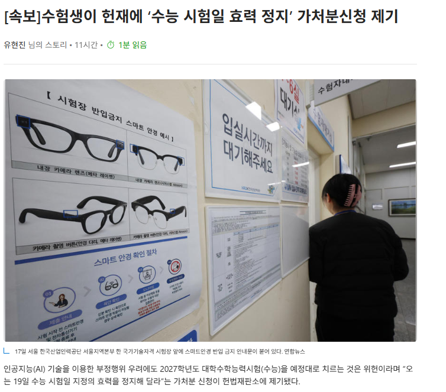
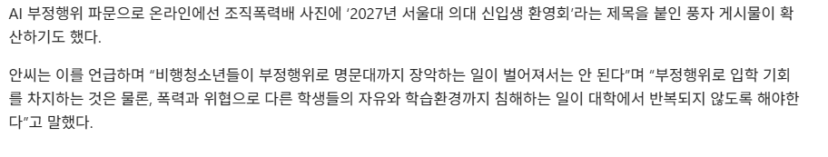

[속보]수험생이 헌재에 ‘수능 시험일 효력 정지’ 가처분신청 제기
근데 이게 헌재에서 다룰 일이긴 한가?
헌재에 넣는건 변호사만 있어야 하니 변호사만 싱글벙글 할 듯....

부정행위의 근거라고 내놓은게 각 커뮤에서 도는 짤.....
일단 가처분이 제기되었으니 정부(교육부)에서는 이 신청에 대해서 헌법재판소에 공식 답변을 해 줘야 함

[속보]수험생이 헌재에 ‘수능 시험일 효력 정지’ 가처분신청 제기
근데 이게 헌재에서 다룰 일이긴 한가?
헌재에 넣는건 변호사만 있어야 하니 변호사만 싱글벙글 할 듯....

부정행위의 근거라고 내놓은게 각 커뮤에서 도는 짤.....
일단 가처분이 제기되었으니 정부(교육부)에서는 이 신청에 대해서 헌법재판소에 공식 답변을 해 줘야 함
일단 물리적으로 수능 끝나고 가처분 결정날 판....ㅋㅋ
저거 내용은 모르겠지만, 잘 썼다는 가정하에 가처분 인용되면 채점중단이나, 성적표 통보중단이 될지도?
그거도 물리적으로 거의 불가능한게 수능성적에는 수시 합격자(최저학력기준) 발표가 같이 걸려있어서 대입 일정 자체가 곱창나버림
해봐야 보름 안쪽으로 가처분이 아니라 헌재 본안 판단이 나와야 하는 상황인건 매한가지거든. 그게 안되면 기존 전형 중 하나를 불법적으로 날리거나 아예 내년 3월에 2027학년도 1학기 개강 자체를 못하는 상황으로 연결될 가능성이 확 올라가는거라....
뒤쪽 일정이 얽힌게 너무 커서 수능을 미루는거랑 헌재 판단을 하는 시한이나 의미가 없는 상황임
'인용되면' 절차상 가능하단거지, 나도 인용되는건 어렵다고 보긴 함
집행이 받아들여져 28년 수능은 연기되었습니다
ㅋㅋ
뭣 ㅋㅋㅋㅋ
현역 입장에서는 당연히 연기가 맞는게 몇백만 돼도 앞라인부터 대학 주르륵 밀리는 건 확정에 투과목은 ㄹㅇ 과목 안락사까지 갈 수 있어서
범행수법도 대략 공개됐겠다 지금 어설프게 연기하면 몰랐던 놈들도 더 시도해서 더 주르륵된다
지금 국무총리가 발표해서 10년으로 막은 마당에 어떻게 할 건데
휴대폰 막히고 매시간 전수조사 예고했는데
대의를 위해 소수가 피해보는건 어쩔수 없다는 놈들 잇어서...
아무리 연기해봐야 한달인데 한달안에는 어떤 영웅이 나타나도 이거 해결안될 것 같은데 ;;
잃을거 없는 애들이 지금 단단히 벼루고 있는 마당에도 부정행위 하겠지만 그게 몇백명이나 되려나??
매년 전국에서 수능 부정행위 사유로 쫓겨나는 애들 숫자 언저리로는 나오지 않을까 싶음....
기본 숫자가 몇십만 단위가 되니까 별의별 상황이 다 생기잖아
0.1퍼만 해도 전국단위로 몇명이냐? 최상위권 목표면 타격 크지
50만명인데 0.1%만 시도해도 500명이다
찾아보니 일단 매년 부정행위로 걸리는 건수가 평균 250건쯤 되네
대부분은 종료령 이후 답안 작성이나 탐구 응시 순서 위반이고 종종 반입금지 걸리는 듯
기본권 침해 문제라서 헌재 맞을 듯 코로나 때도 헌재였음
저런거 변호사는 무페이로도 해준단 사람 많을 걸
말같지도 않은 소리해라 무슨 변호사가 무페이로 해줘
이런 큰 건 헌법소원은 이름을 날릴 기회라서 하는 사람 있을건데
제발 현생을 사세요 헛소리하지말고
국선변호가 아닌 이상 내가 아는 범위 내에서 변호사가 무페이로 해줄 수 있는건 기초생활수급자가 법률구조공단을 통해 의뢰할 때로 아는데.... 수임할 때 마다 사건 등록하는게 있어서 0원은 아예 안된다고 들었거든
반대로 이걸 악용해서 특정 계층의 경우엔 헌법소원과 행정소송을 무제한 걸 수도 있음
연기된다고 ai잡을수있나
아무튼 연기하라도르
27학년도 수능은 1년연기하여 28년도에 같이보는걸로 합시다
커뮤 폭탄테러도 득달같이 잡는데 머...
공부하던 현역들 입장에서는 짜증나지
부정이 존재한다면 4이하 나올 애들이 최상위권으로 올라가는건데 ㅋㅋ 쟤네 입장에서 지금 나온대책들은 실효성이 없다고 판단하는거고
실효성 있는 대책 마련하는 방법은 간단함. 결국 대책마련에 시간이 필요한데 지금 수능 기간 내에는 불가능하니까 대한민국 국민 전원이 동의할 방법을 마련하는 기간 동안 2027학년도 입시를 아예 중단시키고 내년 3월 법정개강일을 넘길 경우엔 2027학번 자체를 비워버리고 2028 대학 모집정원을 2배로 허용해주고 공정하게 2028학년도 수능을 똑같이 치르게 하는거지
만일 이게 사회적 혼란 초래를 안하는 방법이라 생각되면 인용될 듯
어제인가 그제인가 대책발표해준거 그대로 답변해주면 끝이네.
근데 미뤄지면 솔직히 컨닝하려던 애들은 그 기간동안 다른방법 찾을 거 같긴해
내가 업체라면 품절 재고부터 빨리 채워넣을 듯
수능 전날 넣은 가처분이면 결정은 성적표보다 늦게 나오겠네
실제로 입시 전에 넣은 헌법소원이 2년 지나서 나온 적도 있음
진짜 온 나라가 수능에 미쳐서ㅋㅋㅋㅋㅋㅋㅋ기괴하다 이제 의미 없다는걸 받아들일때도 되지 않았냐?
그냥 전부 안경 쓰지말라 하고 눈 나쁘면 돋보기 제공해줘라
저건 수험생이 변호사를 구해서 했다기보다는
수험생자녀를 둔 변호사 혹은 변호사가 수험생을 구해서 제기한거 같음
일단 소를 청구한 자가 수험생이 아니면 적법하지 않는 청구이기 때문에 각하되기 때문임
그럴 수도 있겟네
수험장근처 통신차단하고
직장인들은 집에 가둬놓는게 가장 좋을거 같다
수험생들 걸리적거리게 출근같은거 하면 안되
ㄹㅇ 그날 수능 관련자 이외에는 집 밖으로 아무도 못나오게 해야 함
당장 내일이 수능인데